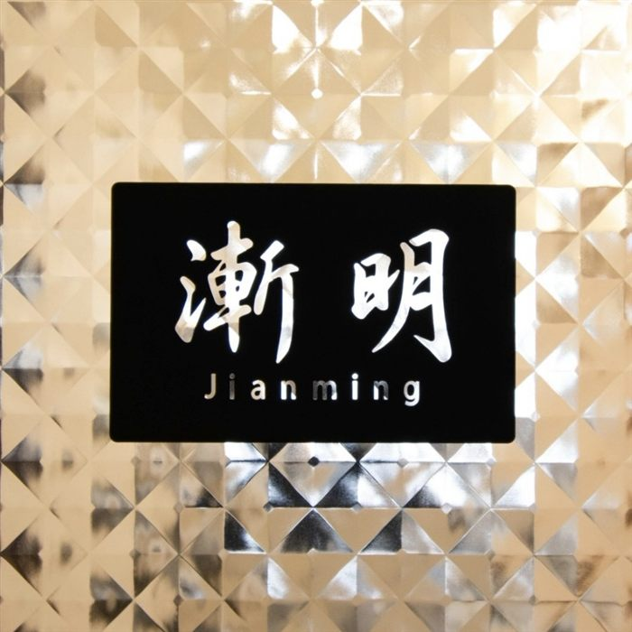
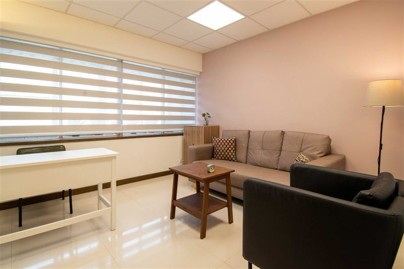
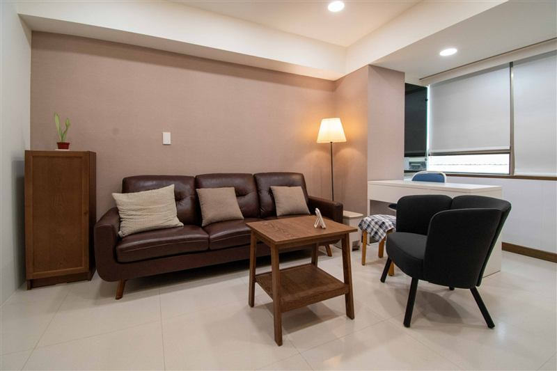
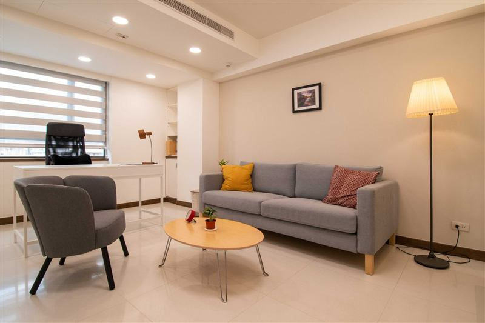

從被理解開始，慢慢走向明朗。
每個人都可能經歷難以理解的情緒、關係中的困擾，或生命中感到迷惘的時刻。在漸明，我們希望提供一個安全、溫暖且值得信任的空間，讓你能夠與心理師一起探索內在的感受、生命經驗及重要關係，逐漸找到適合自己的方向。
在漸明，探索適合自己的方向
漸明提供個別心理諮商，以及伴侶、婚姻與家庭諮商。我們的心理師具有不同的專業背景與治療取向，能依據你的需要，共同討論適合的諮商方式。
不同的專業背景，共同的理解與關懷
漸明的心理師具有不同的專業訓練與治療取向。我們尊重每位心理師的專業特色，也重視團隊成員之間的對話、反思與持續學習。我們希望建立一個尊重專業自主，也能透過交流與合作共同承擔專業責任的團隊。
一個可以安心停留的空間
我們希望漸明不只是一個進行心理諮商的場所，也是一個讓人能夠暫時放下日常生活的忙碌，安心停留、感受與思考的空間。
從空間的安排到諮商室的設計，我們重視隱私、舒適與自在，讓每位來到漸明的人，都能在安心的環境中探索自己。



從這裡，開始一段對話
如果你正在考慮心理諮商，歡迎透過漸明的預約申請表提出需求。你不需要在預約前，就已經清楚知道自己的問題或期待。
收到申請後，漸明將依據你提供的資訊及心理師的接案情況協助安排，並由心理師與你聯繫，確認初次會談時間。
如有服務項目、收費或其他行政事項的疑問，歡迎透過漸明的電話或電子郵件詢問。
提出諮商預約申請